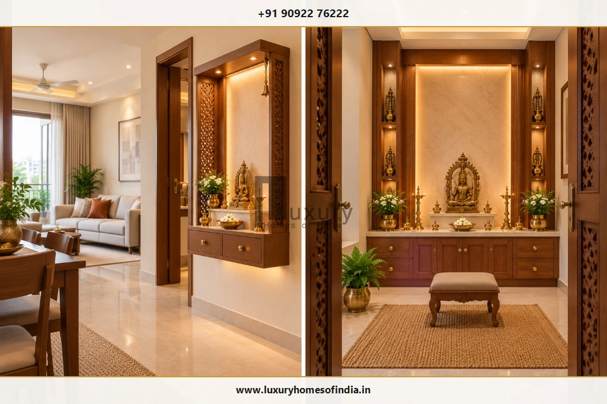
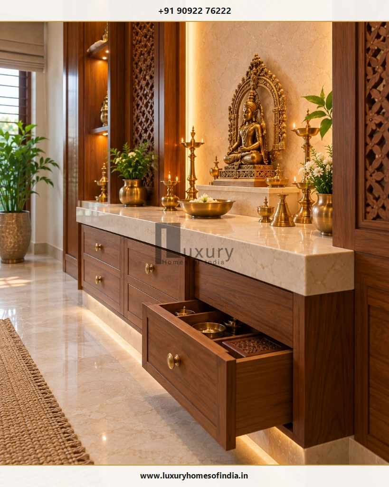

Pooja Room Dimensions and Layout: A Practical Guide for Indian Homes
Pooja room dimensions should be planned around the altar, the space needed for prayer, door access, storage, and safe lighting—not simply the overall size of the room. Discover standard dimensions, layout comparisons, ergonomics for seated and standing worship, and pre-construction architectural guidelines.

Executive Summary: Ergonomics Before Ornamentation
A common pitfall in residential design is choosing an ornate mandir before calculating practical floor clearances. An oversized altar in a 4 × 4 ft room can choke circulation, while an undersized shrine in a 6 × 8 ft villa room feels lost. The secret to a peaceful prayer room is balancing nominal room dimensions against the physical footprint of idols, offering platters, door swings, and comfortable devotee prayer postures.
- Compact Flats: 2–3 ft wide wall units or 4 × 4 ft dedicated rooms.
- Family Residences: 5 × 5 ft or 5 × 7 ft rooms with seated clearances.
- Altar Elevation: 18–22″ for seated worship; 32–36″ for standing prayer.
- Clearance Math: Room depth minus altar depth = clear prayer floor area.
Table of Contents
1. What Is the Ideal Pooja Room Size?
There is no single statutory or universal size for every Indian home. The appropriate dimensions depend on how the prayer space will be used, whether it is an enclosed room or open niche, and how much area the altar platform and storage occupy.
| Type of Pooja Space | Indicative Dimensions | Key Planning Consideration |
|---|---|---|
| Wall-Mounted Mandir | 2 – 3 ft wide × 12 – 18″ depth | Check wall masonry load capacity, mounting height, and corridor circulation. |
| Compact Dedicated Room | 4 × 4 ft (16 sq ft) | Verify usable floor area, shallow altar depth (15–18″), and outward door swing. |
| Small Family Prayer Room | 5 × 5 ft (25 sq ft) | Accommodates 1–2 devotees seated on mats with comfortable altar access. |
| Medium Dedicated Room | 5 × 7 ft (35 sq ft) | Provides space for 3–4 family members, full-depth altar, and side cabinetry. |
| Larger Family Prayer Room | 6 × 8 ft or more (48+ sq ft) | Supports festival gatherings, multiple idol tiers, standing diyas, and circumambulation. |
Editorial Note: The dimensions above are indicative architectural design examples, not statutory building-code minimums. For additional reference on space planning across Indian residential layouts, see the Houzz India guide to ideal puja room size.
2. Pooja Room Dimensions for Different Home Types
The appropriate prayer space solution depends more on the floor plan layout, doorway openings, and daily worship rituals than on the bedroom count alone:

1 & 2 BHK Apartments
Prioritize wall-mounted floating mandirs or built-in hallway niches (24–36″ width). Avoid bulky floor cabinets that choke living or dining circulation.
3 BHK Apartments
Assess a dedicated 4 × 4 ft or 4 × 5 ft room. Test the altar footprint and door swing before confirming joinery drawings.
Independent Houses
Allocate 5 × 7 ft or 6 × 8 ft for dedicated prayer, allowing room for standing kuthuvilakku lamps, brass storage, and family festival rituals.
Luxury Villas
Create an architectural sanctuary (50 to 90 sq ft) with double-height volume, natural stone backdrops, and integrated mechanical smoke ventilation.
3. Mandir, Altar and Platform Dimensions
The altar platform should be designed around your consecrated idols and worship items rather than arbitrary standards:

Platform Height Ergonomics
Countertop elevation must align with the family's preferred prayer posture:
- Seated Worship (Floormat / Asana): Platform height should be 18 to 22 inches from finished floor level so deity idols sit at comfortable chest and eye height.
- Standing Worship: Platform height should be 32 to 36 inches, matching standard kitchen/vanity counter ergonomics to prevent bending fatigue.
Altar Depth & Clearance Calculation
A shallow altar makes lamp placement precarious, while an excessively deep counter consumes vital floor area:
Clearance Formula Example:
In a 5.0 ft deep room with a 1.5 ft (18″) deep altar counter:
5.0 ft (Total Room Depth) − 1.5 ft (Altar Platform) = 3.5 ft (Net Usable Prayer Clearance).
A 3.5 ft clearance comfortably accommodates one devotee seated on a mat with room for an inward-swinging 2.5 ft door.
4. Pooja Room Layout Options
Choose an architectural layout that establishes a serene relationship between the altar, the worshipper, doorways, and storage:
Layout A: Single-Wall Altar
The altar spans the entire back wall, leaving 100% of the remaining floor area open. Best for compact 4 × 4 ft and 5 × 5 ft rooms.
Layout B: Back-Wall Altar with Side Storage
Central altar framed by shallow 12-inch side cabinetry or open display niches. Ideal for 5 × 7 ft family prayer rooms.
Layout C: Corner Mandir Alcove
Utilizes a 90° living/dining corner with an L-shaped platform or diagonal altar. Preserves circulation in open-plan homes.
Layout D: Dedicated Room with Seated Stool
Spacious 6 × 8 ft layout accommodating a low wooden meditation stool, floor carpets, and full circumambulation clearance.
5. Doorway and Circulation Planning
Doorway dimensions and swing arcs directly determine usable room space. A standard pooja room doorway should provide a clear opening of 2 ft 6 in to 3 ft (750 to 900 mm).
- Two-Shutter Doors (Irattai Kadhavu): Double doors halve the swing arc into the room, preventing the shutter from striking seated devotees or standing lamps.
- Sliding or Pocket Doors: Ideal for compact rooms where swinging doors consume too much floor area.
- Raised Wooden Threshold (Vaasapadi): A 1 to 1.5-inch raised threshold defines sacred boundaries and stops dust from entering the sanctum.
6. Storage and Cabinet Planning
Incorporate storage into the initial architectural drawings to keep ritual paraphernalia off the sacred altar:
- Under-Altar Drawers (6–8″ depth): Soft-close drawers with stainless-steel liners for matchboxes, camphor, wicks, and dhoop cups.
- Pull-Out Prasadam Ledge: Concealed 15-inch wooden or quartz tray beneath the counter to support heavy brass aarti plates.
- Upper Scripture Cupboard: Dust-free glass-front storage for holy books, positioned above waist level.
- Oil & Ghee Compartment: Lower ventilated cabinet with removable spill trays to isolate oil containers cleanly.
7. Lighting, Electrical Points and Lamp Safety
A coordinated electrical layout ensures safety and serene visual balance:

Fire Safety & 18-Inch Clearance Rule
Place oil lamps (diyas) strictly on non-combustible stone, marble, or brass trays. Maintain at least 18 inches (450 mm) of vertical clearance between lamp flames and overhead wooden shelves, hanging fabrics, or electrical conduits. Never leave lit lamps unattended.
8. Ventilation and Material Selection for Chennai Homes
Chennai's coastal climate—with elevated humidity and saline air—demands disciplined material specification and active ventilation:
- Moisture-Resistant Wood: Specify kiln-seasoned CP Teak or IS 710 marine-grade plywood with natural veneers to prevent swelling.
- Sealed Natural Stone: Apply penetrating sealants to marble countertops biannually to protect against oil, turmeric, and holy water stains.
- Active Smoke Evacuation: Install an acoustic inline exhaust fan (minimum 150 CFM) or louvered transom vents to disperse camphor and sambrani smoke freely.
9. Pooja Room Layout as per Vastu
Traditional Vastu Shastra principles harmonize sacred energies with the natural elements. While directional rules must be balanced against structural constraints, key guidelines include:
- Auspicious Quadrant: North-East (Ishanya) is the ideal cardinal zone; East and North are recognized alternatives.
- Devotee Orientation: Worshippers should face East or North during prayer; idols should not face South.
- Plumbing Isolation: Ensure the pooja room never shares a wall with a bathroom, and is never situated beneath an upper-floor toilet.
For complete directional analysis, read our dedicated guide on Pooja Room Placement as per Vastu.
10. Common Pooja Room Planning Mistakes
Selecting the Room Before Measuring the Altar
Commissioning an oversized mandir without measuring the idols leaves zero floor space for family members to sit or prostrate.
Insufficient Prayer Clearance
Failing to calculate nominal room depth minus counter depth leads to cramped, uncomfortable prayer postures.
Door & Drawer Clashes
Inward-swinging solid doors that strike lower storage drawers or standing lamps cause daily frustration and damage.
Over-Crowding with Cabinetry
Filling all three walls with deep cupboards suffocates the sanctum. Keep side walls shallow and visually light.
11. Pooja Room Planning Checklist
Use this pre-construction checklist before approving millwork and masonry drawings:
| # | Planning Milestone | Verification Action | Sign-Off |
|---|---|---|---|
| 1 | Overall Room Volume | Confirm finished clear floor area and ceiling height after false ceiling drops. | |
| 2 | Idol Footprints | Measure height, width, and depth of all consecrated deities and framed portraits. | |
| 3 | Altar Proportions | Finalize counter elevation (18–22″ seated vs 32–36″ standing) and depth (15–24″). | |
| 4 | Prayer Floor Area | Verify at least 3.5 to 5.0 ft of unobstructed clearance in front of the counter. | |
| 5 | Doorway Swing Arc | Confirm double shutters or sliding doors open without striking furniture or devotees. | |
| 6 | Cabinet Extensions | Ensure lower soft-close drawers pull out fully without blocking circulation. | |
| 7 | Lighting & Electricals | Mark conduit boxes, LED driver access panels, and switchboard locations. | |
| 8 | Flame & Smoke Safety | Ensure 18-inch clearance from diya flames and install dedicated exhaust fan ducting. | |
| 9 | Material Suitability | Verify seasoned teak, marine ply, sealed stone, and lacquered brass hardware grades. | |
| 10 | Vastu Alignment | Confirm North-East placement and East-facing devotee orientation on the floor plan. |
Frequently Asked Questions
Architectural Planning for Sacred Spaces
Well-planned pooja room dimensions make daily worship more comfortable and ensure the space remains serene over decades of family living. Whether you need a space-saving wall-mounted unit or a bespoke villa prayer room, measuring your idols, calculating prayer clearances, and verifying door swings before construction eliminates costly site alterations.
Luxury Homes of India (LHI) specializes in architectural planning, turnkey villa construction, and premium interior execution across Chennai and Tamil Nadu. Contact our principal architects to coordinate your pooja room layout with your overall residence.